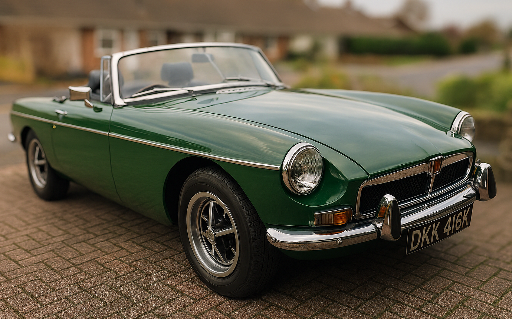
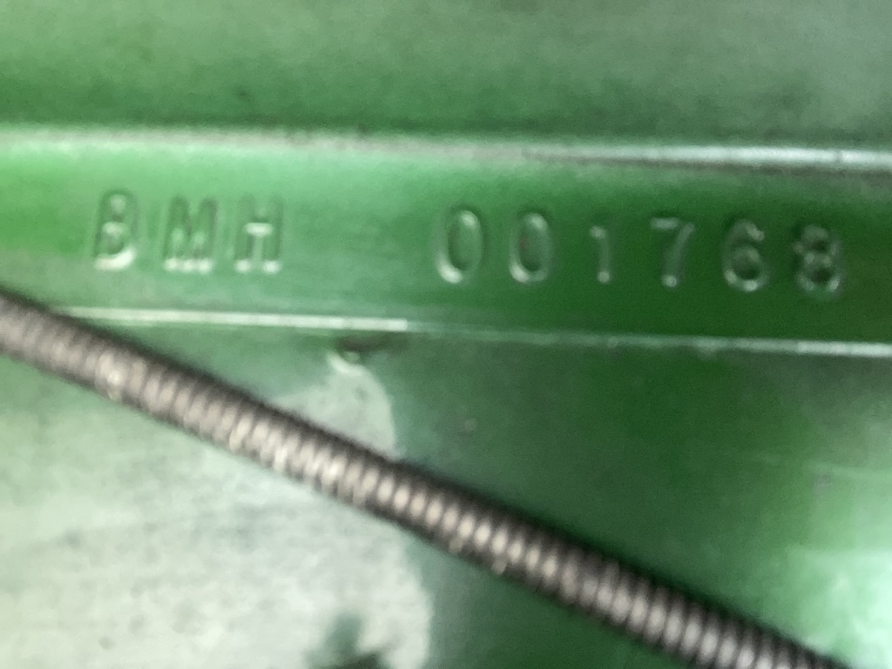
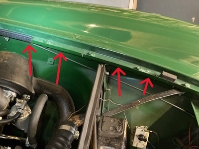

After reading Steve Plummer's article in June's Enjoying MG and Roger Parker's analysis, I wondered if someone could help with an element of my B's history that I've not been able to establish.Last year I decided to sell my 1948 MG TC, which I'd owned for over ten years. I did the mechanical work on it myself, but was starting to find that getting the car up on axle stands and crawling around on the garage floor was getting more difficult. So in October 2025 I sold the TC (it is now in the Netherlands) and in November bought an MGB, a car that would keep up with modern traffic and could be repaired/maintained by others if necessary (although, being lower, it is more difficult to get in and out).
My basic requirement was for a Mk3 roadster with overdrive. If is was built in 1972 (we were married that year), that would be good. And even better if it was green with tan upholstery. And after owning the TC, I do like wire wheels. As you can tell from the photo, I found a 1972 roadster (with overdrive) in green, and it was local. No wire wheels, but I do like the RoStyle wheels and I'm happy to put up with black leather seats.


The car, which came with a large folder of invoices, was advertised as having been re-shelled about 25 years ago. However the contents of that folder started in 1999 and there is no mention of a new bodyshell. Also, there is no plate, with the shell number, where I expected to find one. Luckily, people at British Motor Heritage (BMH) were very helpful and returned my photo with arrows pointing to where the number might be. And, low and behold, there it was.BMH said "This is one of the earlier shells produced by BMH, back when we were owned by Rover. Unfortunately, when the company was sold, a number of records from this period were lost. As a result, I am unable to give you the specific date of manufacture for your bodyshell, all I can really say is that it was manufactured prior to 1992."
With no manufacturing date BMH couldn't offer me a bodyshell certificate, however, they kindly sent me a 'certificate of authenticity'.
I find it slightly incongruous that the whole monocoque body of a car can be replaced and the car still retain its original identity. However, the plate with the original car number has been attached to the new shell and the engine number is the original. The only modifications seem to be the addition of a Lumenition Magnetronic electronic ignition system, the addition of an electric fan (although the mechanical fan is still in place) and the fitting of an imobiliser (an Apllo 2002). Unfortunately, for the latter there is only one fob, but the manufacturer has gone out of business and new fobs are not available. Neither are instructions on how to 'programme' one.
A previous owner had obtained a certified copy of the factory record, which says that the colour was Teal Blue. So I suspect that the new shell was painted a different colour to the original car. That owner also obtained copies of DVLA records of all previous owners. The owner of the car between July 1983 and August 1997, and thus the most likely person to have re-shelled the car, seems to have lived in Aldershot, moved to Bushey, Watford and then on to Penzance. But I've not been able to trace him so far.
This leaves me with questions such as:
- When exactly was the car re-shelled?
- Why was the car re-shelled?
- Why was the colour changed?
- Did the owner do the work of moving all the parts to the new shell themselves?
So, if anyone can suggest how I can find answers to these question I would be most grateful. In the meantime the car has got through its first MoT test (during my ownership) and I'm enjoying driving it. Also, my wife finds it more comfortable than the TC and feels much safer.